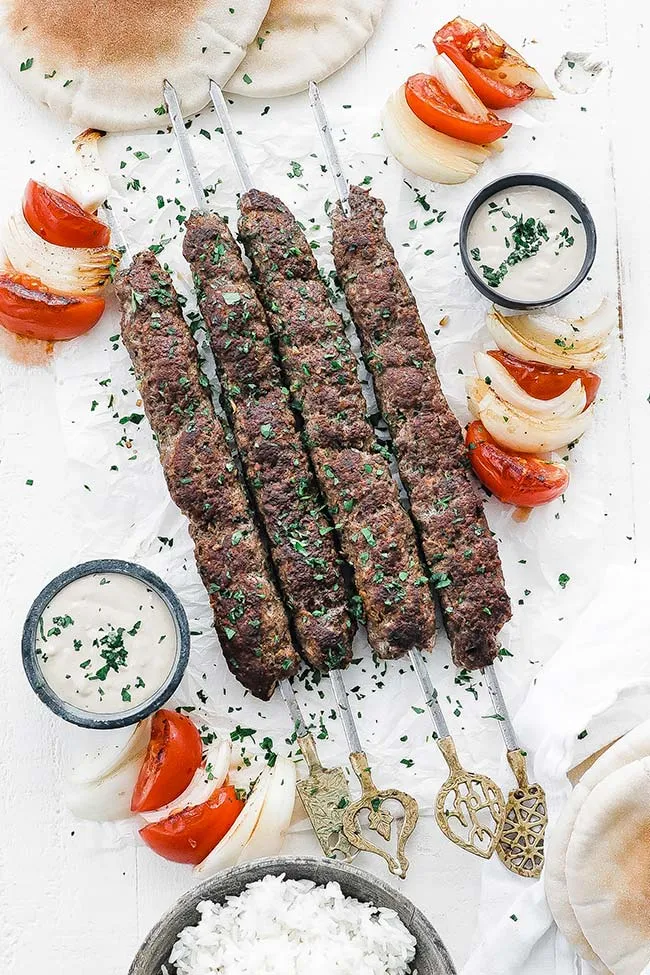

Kofta is the Goat!

Ingredients:
Kofta is a family of meatball or meatloaf dishes originating from the Middle East, South Asia, and Central Asia. It typically consists of minced meat, usually beef, lamb, chicken, pork, or a combination, mixed with spices and herbs. The meat is pounded or ground to a fine consistency, hence the Persian word “kūfta” meaning “to beat or to grind”.
Ingredients:
- 1 pound ground meat (beef, lamb, or combination)
- 1 medium onion, finely chopped
- 2 cloves garlic, minced
- 1/4 cup fresh parsley, chopped
- 1 teaspoon cumin
- 1 teaspoon paprika
- 1/2 teaspoon salt
- 1/4 teaspoon black pepper
- 2 tablespoons breadcrumbs (optional)
Steps:
- In a large bowl, combine ground meat, chopped onion, minced garlic, parsley, cumin, paprika, salt, and black pepper. Mix well with your hands or a wooden spoon until just combined. Be careful not to overmix.
- If using breadcrumbs, add them to the mixture and mix until they’re evenly distributed.
- Cover the mixture and refrigerate for at least 30 minutes or overnight to allow the flavors to meld.
- Preheat a grill or grill pan to medium-high heat. Thread the kofta mixture onto skewers, leaving a small space between each kofta.
- Brush the koftas with olive oil and cook for 4-6 minutes per side, or until they’re cooked through and slightly charred.
- Serve hot with your choice of sides, such as rice, grilled vegetables, pita bread, and tzatziki sauce.